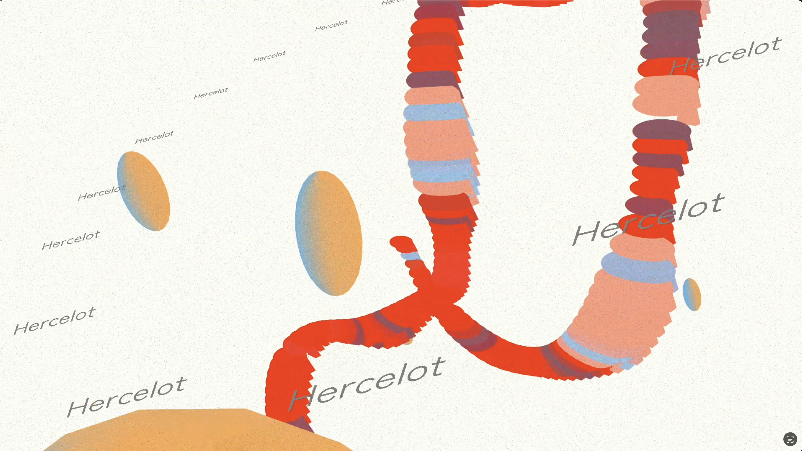
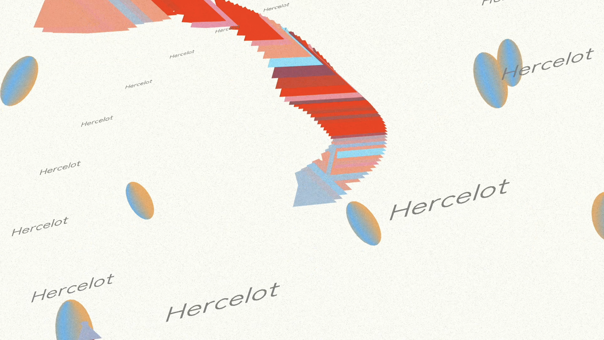
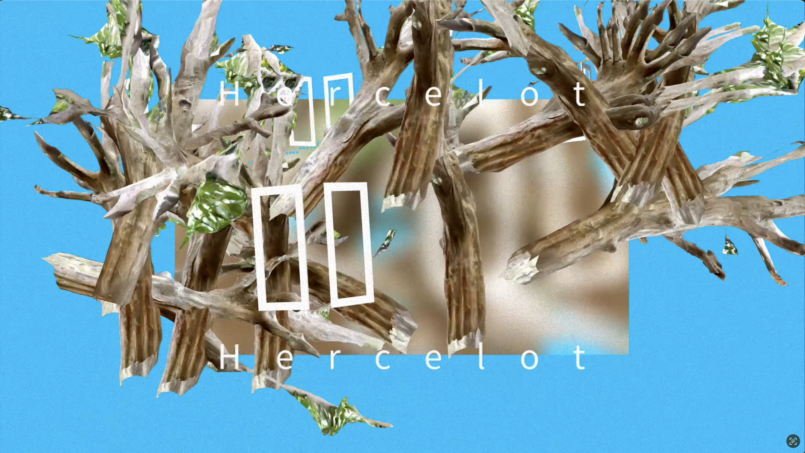
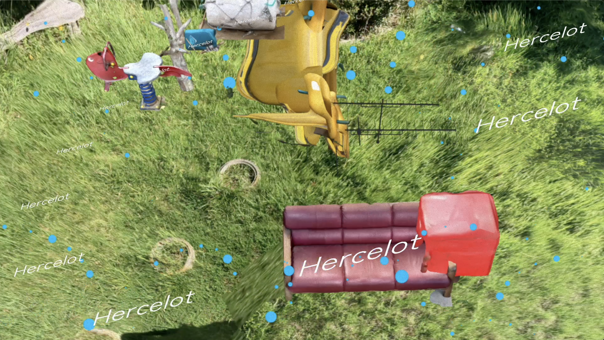
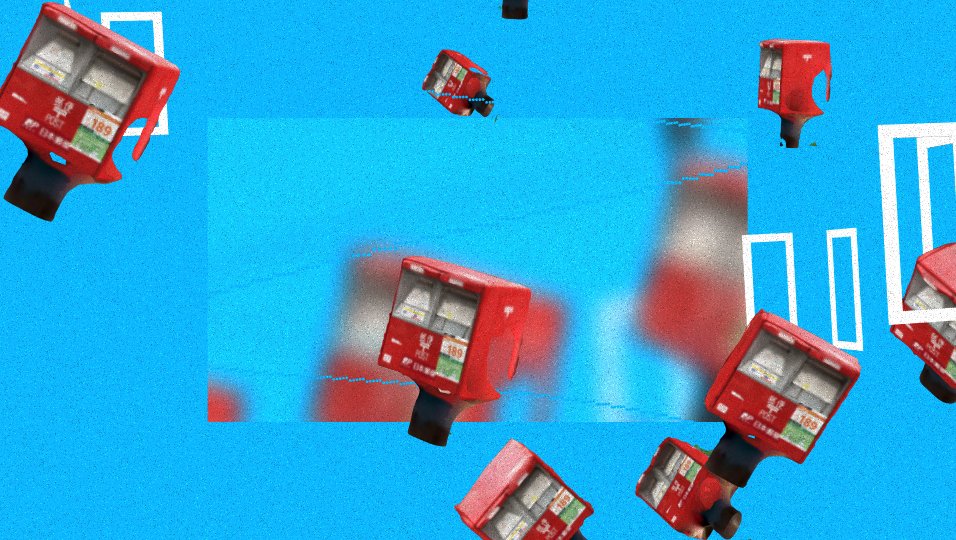
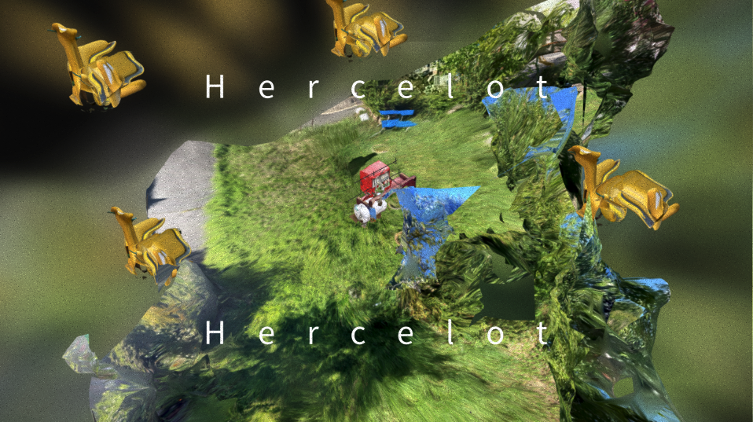
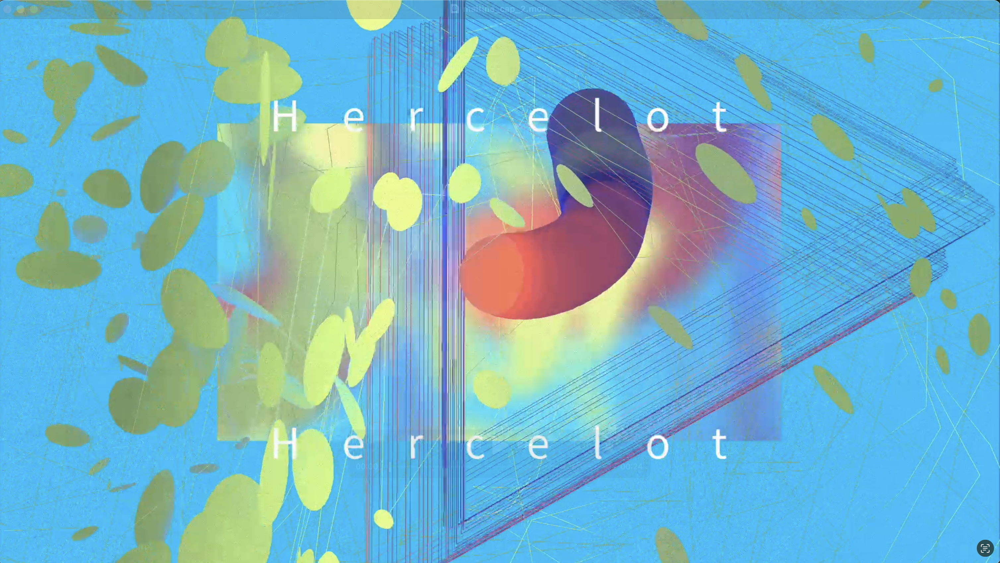

Maltine Records 20th Anniversary 20 Hour Event DAYにて、HercelotさんのVJを担当させていただきました。 Maltine Records 20th Anniversary 20 Hour Event -DAY-日時：2025年12月7日 9:00~場所：Spotify O-EAST TouchDesigner, Scaniverce